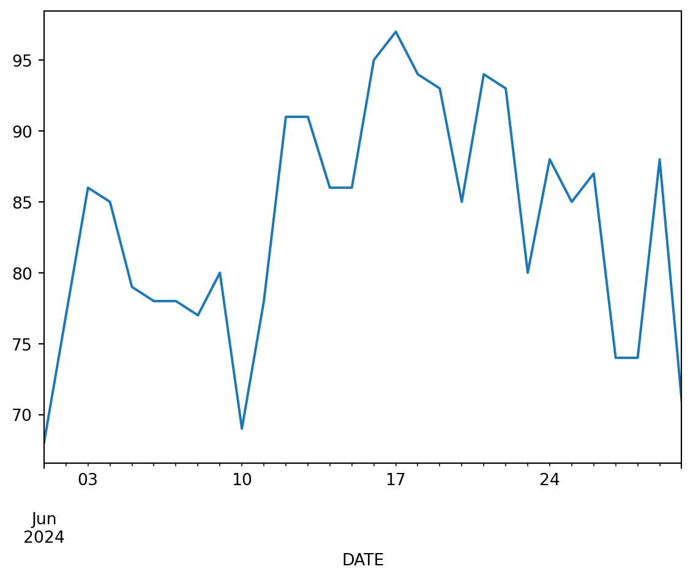
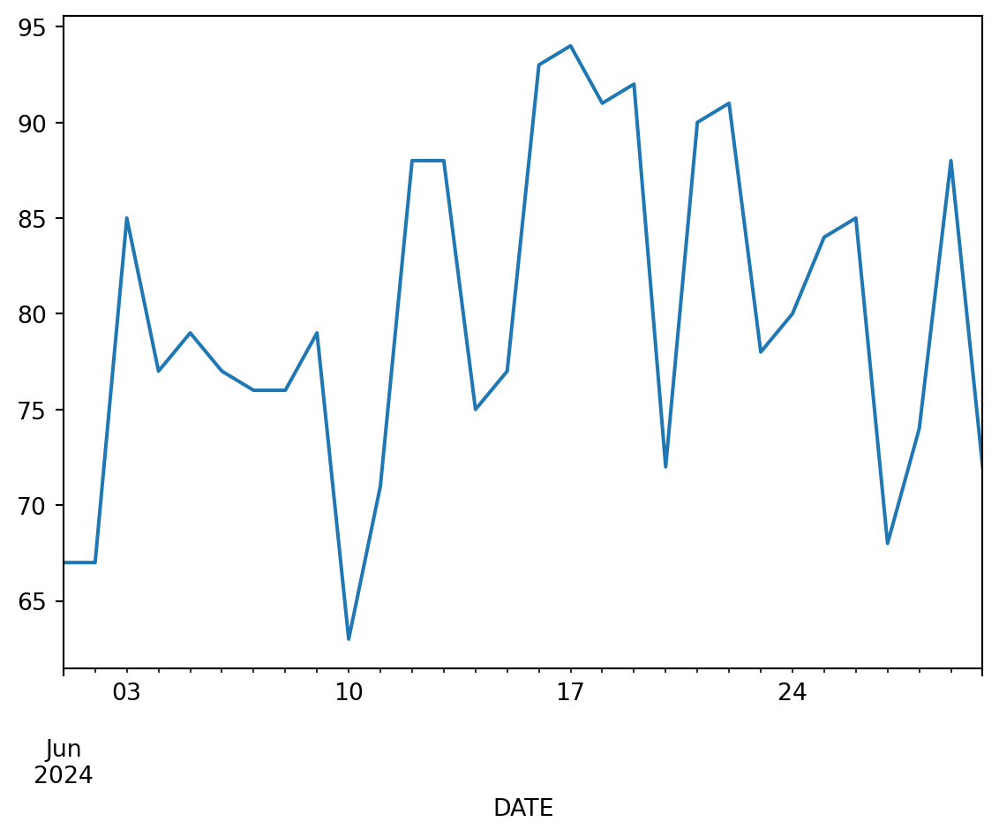

STEP 1: Import packages
Python packages let you use code written by experts around the world
Because Python is open source, lots of different people and organizations can contribute (including you!). Many contributions are in the form of packages which do not come with a standard Python download.
Learn more about using Python packages. How do you find and use packages? What is the difference between installing and importing packages? When do you need to do each one? This article on Python packages will walk you through the basics.
In the cell below, someone was trying to import the pandas package, which helps us to work with tabular data such as comma-separated value or csv files.
- Correct the typo below to properly import the pandas package under its alias pd.
- Run the cell to import pandas
# Import libraries
import pandsa as pdSee our solution!
# Use tabular data
import pandas as pdSTEP 2: Download Data
Global Historical Climatology Network
One way scientists know that the climate is changing is by looking at records from temperature sensors around the globe. Some of these sensors have been recording data for over a century! For this activity, we’ll get daily maximum temperature measurements from the Global Historical Climate Network daily (menne_overview_2012?), an openly available and extensively validated global network of temperature sensors.

The GHCNd data are available through by the National Oceanic and Atmospheric Administration’s (NOAA) National Centers for Environmental Information (NCEI) Climate Data Online search tool. We can get also get these data using code by contacting NCEI’s API.
An API, or Application Programming Interface, is how computers talk to each other.
Read more about NCEI’s API and the Climate Data Online database.
For this activity we have created URLs that contacts the NCEI API for two climate stations in the greater Chicago area. We will walk through each line of the url to explain what it is doing.
O’Hare International Airport
Chicago O’Hare International Airport (ORD) is one of the busiest airports in the world, serving as a major hub for both domestic and international flights. Located about 14 miles northwest of downtown Chicago, it offers flights to more than 200 destinations and handles over 83 million passengers annually. It is home to Chicago’s official meteorological station. It creates an urban heat island due to the amount of concrete and asphalt needed to support the infrastructure.
Station ID: USW00094846
- Add the station ID for the O’Hare station (USW00094846) into the URL below
- Run the code to store the URL in Python
Getting data from APIs relies on internet services you don’t have control over. If you are getting a response something like 503: Service Unavailable, it may be that the API is down temperarily! If that happens during the workshop, we’ll have you use some data we’ve already downloaded and placed in the folder with this code – with any luck we won’t need it.
# Create a URL API call for the O'Hare climate station
ohare_url = (
'https://www.ncei.noaa.gov/access/services/data/v1?'
'dataset=daily-summaries'
'&dataTypes=TMAX'
'&stations='
'&startDate=2024-06-01'
'&endDate=2024-06-30'
'&units=standard')
# Check the URL
ohare_urlSee our solution!
# Create a URL API call for the O'Hare climate station
ohare_url = (
'https://www.ncei.noaa.gov/access/services/data/v1?'
'dataset=daily-summaries'
'&dataTypes=TMAX'
'&stations=USW00094846'
'&startDate=2024-06-01'
'&endDate=2024-06-30'
'&units=standard')
# Check the URL
ohare_url'https://www.ncei.noaa.gov/access/services/data/v1?dataset=daily-summaries&dataTypes=TMAX&stations=USW00094846&startDate=2024-06-01&endDate=2024-06-30&units=standard'- Replace
url_or_pathwith the variable name you used above to store the O’Hare station API URL (or O’Hare data path if the API is down). Run the code to make sure you’ve got it right! - Uncomment lines 4 and 5. Then, replace
date_column_namewith the actual column name that has the date. - Run the code, again. Check that the date column is the index and that it is parsed into a
DateTimeIndexusing the.describe()method.
# Open data using pandas
ohare_df = pd.read_csv(
url_or_path,
#parse_dates=True,
#index_col='date_column_name'
)
# Plot the data using pandas
ohare_df.TMAX.plot()
# Check the first 5 lines of data
ohare_df.head()See our solution!
# Open data using pandas
ohare_df = pd.read_csv(
ohare_url,
# Comment above and uncomment below if NCEI isn't working
# ohare_path,
parse_dates=True,
index_col='DATE',
na_values=['NaN'])
# Plot the data using pandas
ohare_df.TMAX.plot()
# Check the data types
ohare_df.describe()| TMAX | |
|---|---|
| count | 30.000000 |
| mean | 83.566667 |
| std | 8.122694 |
| min | 68.000000 |
| 25% | 78.000000 |
| 50% | 85.000000 |
| 75% | 90.250000 |
| max | 97.000000 |

Northerly Island
Northerly Island is a 91-acre man-made peninsula located along the Lake Michigan shoreline in Chicago. Originally part of Daniel Burnham’s 1909 Plan of Chicago, it was transformed into a nature-focused park featuring walking trails, natural habitats, and scenic lakefront views. The site also hosts the Huntington Bank Pavilion, a popular outdoor concert venue.
- Repeat the above data loading process using the Northerly Island site (Station ID: USC00111550)
e.g. northerly_url instead of ohare_url. Otherwise, you will write over the data you just downloaded!
# Create an API call for the Northerly climate stationSee our solution!
# Create an API call for the Northerly climate station
northerly_url = (
'https://www.ncei.noaa.gov/access/services/data/v1?'
'dataset=daily-summaries'
'&dataTypes=TMAX'
'&stations=USC00111550'
'&startDate=2024-06-01'
'&endDate=2024-06-30'
'&units=standard')
# Check the url
northerly_url'https://www.ncei.noaa.gov/access/services/data/v1?dataset=daily-summaries&dataTypes=TMAX&stations=USC00111550&startDate=2024-06-01&endDate=2024-06-30&units=standard'# Open data
# Plot the data
# Check the first 5 lines of dataSee our solution!
# Open data
northerly_df = pd.read_csv(
northerly_url,
# Comment above and uncomment below in the event that NCEI isn't working
# northerly_path,
parse_dates=True,
index_col='DATE',
na_values=['NaN'])
# Plot the data
northerly_df.TMAX.plot()
# Check the first 5 lines of data
northerly_df.head()| STATION | TMAX | |
|---|---|---|
| DATE | ||
| 2024-06-01 | USC00111550 | 67 |
| 2024-06-02 | USC00111550 | 67 |
| 2024-06-03 | USC00111550 | 85 |
| 2024-06-04 | USC00111550 | 77 |
| 2024-06-05 | USC00111550 | 79 |

STEP 3: Wrangle Data
Select only the columns you want
Notice that your data came with a STATION column as well as the maximum temperature TMAX column. The extra column can make your data a bit unweildy.
To select only the TMAX column:
- Replace
dfwith the name of yourDataFrame - Replace
column_namewith the name of the column you want to select - Replace
tmax_dfin all locations with a descriptive name for the new single-columnDataFrame
[[]])
If you use single brackets, you will find that you get back something called a Series rather than a DataFrame, which will make things difficult down the road. A Series is a single column of a DataFrame. It still has an index (in this case our dates), but can’t do all the things a DataFrame can do. It also displays as plain text instead of a formatted table, so you can easily tell the difference.
# Select only the TMAX column of the O'Hare data
tmax_df = df[['column_name']]
tmax_df.describe()# Select only the TMAX column of the Northerly data
tmax_df = df[['column_name']]
tmax_df.describe()See our solution!
ohare_tmax_df = ohare_df[['TMAX']]
northerly_tmax_df = northerly_df[['TMAX']]
ohare_tmax_df.describe(), northerly_tmax_df.describe()( TMAX
count 30.000000
mean 83.566667
std 8.122694
min 68.000000
25% 78.000000
50% 85.000000
75% 90.250000
max 97.000000,
TMAX
count 30.000000
mean 79.900000
std 8.738934
min 63.000000
25% 74.250000
50% 78.500000
75% 88.000000
max 94.000000)Join data
Right now, we have data from two stations in two separate DataFrames. We could work with that, but to make things go smoother (and learn how to work with DataFrames) we can join them together.
There are a few different ways to combine DataFrames in Python. A join combines two DataFrames by their index (the dates in our case), checking to make sure that every date matches. In our case, we could concatenate instead without checking the dates, because all the dates are the same for our two DataFrames. That would probably be faster! But also, we think it is more error-prone. For example, it might not tell you that something was wrong if you accidentally downloaded data from two different years.
Starting with the sample code below:
- Replace
left_dfwith the name of the firstDataFrame. In this case, it doesn’t matter which one you choose to be on the left, but you need to make sure that it matches the left suffix label (lsuffix). - Replace
right_dfwith the name of the secondDataFrame, making sure it matchesrsuffix. - Run the code and check that your join happened correctly.
# Join the data
tmax_df = (
left_df
.join(
right_df,
lsuffix='_ohare',
rsuffix='_northerly')
)
tmax_df.head()See our solution!
# Join the data
tmax_df = (
ohare_tmax_df
.join(
northerly_tmax_df,
lsuffix='_ohare',
rsuffix='_northerly')
)
tmax_df.head()| TMAX_ohare | TMAX_northerly | |
|---|---|---|
| DATE | ||
| 2024-06-01 | 68 | 67 |
| 2024-06-02 | 77 | 67 |
| 2024-06-03 | 86 | 85 |
| 2024-06-04 | 85 | 77 |
| 2024-06-05 | 79 | 79 |